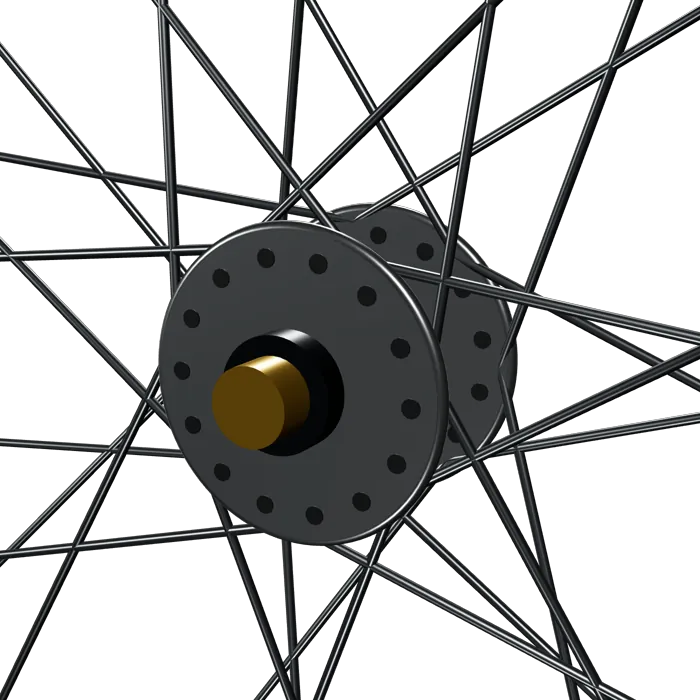
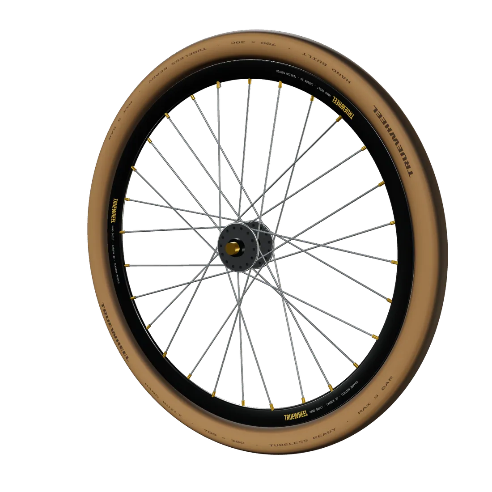
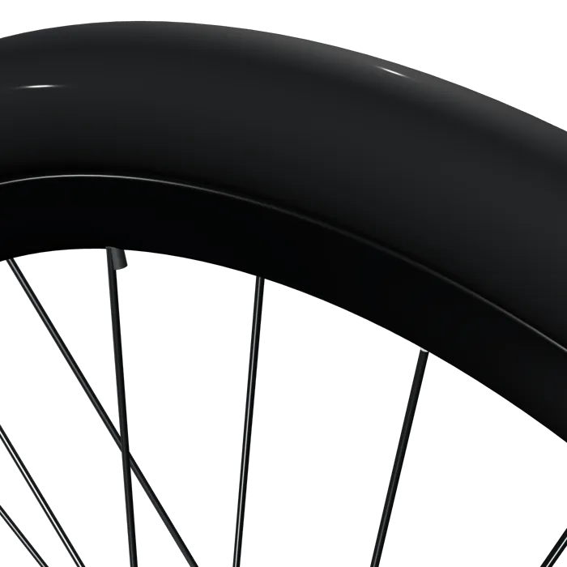
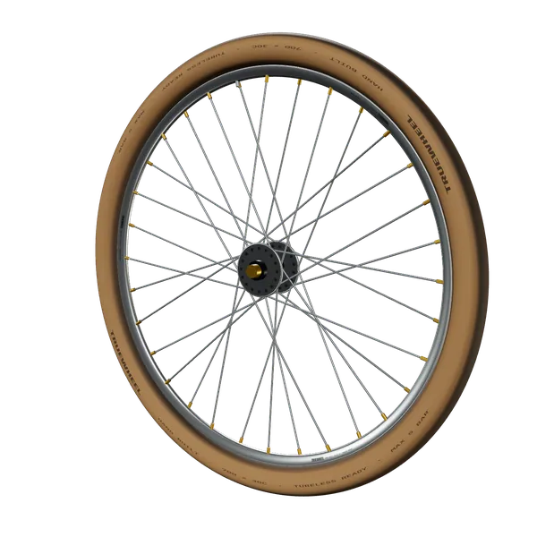
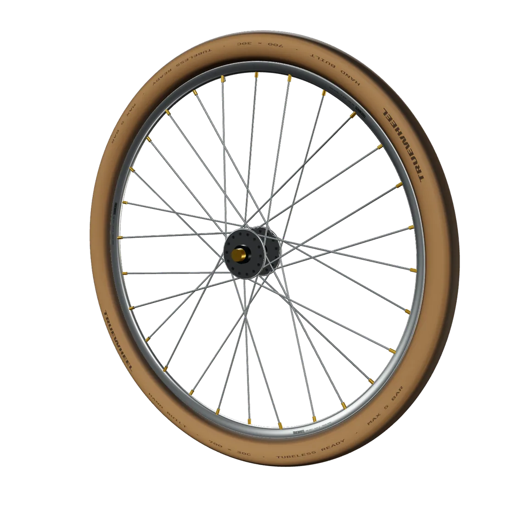

Even tension
within 5%
Every spoke is read with a tension meter and brought within 5% of its neighbours. Even tension is what keeps a wheel true for years.
Bicycle wheels laced and trued by hand, each spoke brought to the same tension so the wheel stays straight for years. Then we tune the rest of the bike around it.

Product images are renders.
Every wheel leaves with a build card. These are the numbers we hold it to, checked spoke by spoke on the stand.

within 5%
Every spoke is read with a tension meter and brought within 5% of its neighbours. Even tension is what keeps a wheel true for years.

0.2 mm
Side-to-side wobble is held to 0.2 mm or less, measured with a dial gauge against the rim's braking track.
0.3 mm
Hop, the up-and-down movement as the wheel turns, is held to 0.3 mm or less, so the ride stays smooth at speed.

dish 0.0
The rim is centred between the frame's dropouts with a dishing tool, so the wheel tracks straight and the brakes stay even.
3 passes
Spokes are stress-relieved three times during the build, so they settle on the stand instead of on your first ride.
Product images are renders of the wheels we build.
Labour is fixed. Parts are quoted separately and fitted only after you approve them.
Same day
$65
2 to 3 days
Most booked
$145
4 to 5 days
$295
7 to 10 days
$420labour and spokes, from
A safety check's $65 comes off any bigger service you approve.
Choose each part and the price, weight and build time update as you go. The estimate covers a front and rear pair, spokes, nipples and build labour.


Every job follows the same four stages and ends with the card below, filled in for your bike.
Request a day and bring the bike in. It takes about five minutes.
We find what's worn and send a written quote. Work starts only after you approve it.
Wheels are laced, stress-relieved and tension-mapped. Every spoke reading is recorded on your card.
A mechanic test-rides it first, then walks you through what was done.
Choose a service and a day from Tuesday to Saturday. We reply by email to confirm, and you pay when you pick up.
Machines tension factory wheels to a range. We bring every spoke to the same tension and stress-relieve them, so the wheel stays straight longer. You also pick the rim, hub and spoke count for your weight and riding.
Book a safety check. If it needs more, we send a written quote, and the $65 comes off any bigger service you approve.
Yes. Bring the rims and hubs with your drop-off and we quote the build labour and spokes. We check the parts before we start.
Yes, for mechanical work, brakes and wheels. We don't service motors or batteries.
Every wheel we build gets free truing and tension checks for 12 months. Crash damage and bent rims are quoted separately.